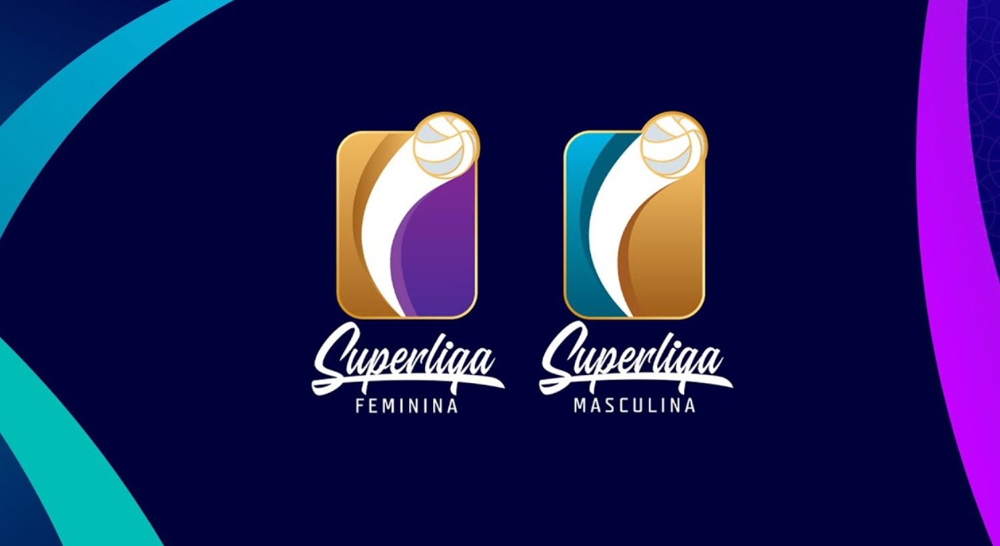
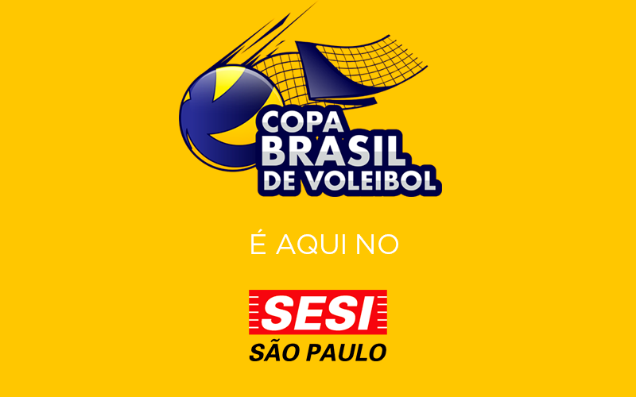
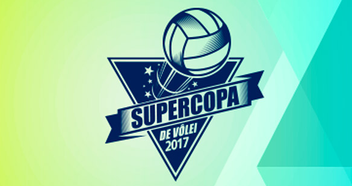

Benefícios
Estimula a sinapse dos neurônios, pois precisa estudar a jogada, o adversário, o time.
- Melhora a cognição, porque necessita ter a percepção rápida da jogada;
- Fortalece o corpo, estimula os membros superiores e inferiores, aumentando a flexibilidade e a
coordenação motora;
- Melhora as capacidades cardiorrespiratórias;
- Auxilia na perda de peso, como todas as atividades físicas;
- E alivia o estresse, pela adrenalina da competição.
Jogar voleibol emagrece?
Um dos maiores benefícios do vôlei é a sua grande ajuda na queima de gordura.
Isso se deve, principalmente, à quantidade de movimentos realizados com todo o
corpo.
Jogar vôlei gasta, em média, cerca de 400 calorias por hora, portanto, é uma ótima
opção para quem quer emagrecer. O esporte desenvolve todas as valências físicas,
como velocidade, potência, força, gasto calórico, etc.
Lesões
As lesões mais comuns no voleibol são:
Entorse de tornozelo;
Devido aos constantes saltos e explosões de corridas.
Lesões nos ombros;
Por conta dos saques, arremessos, batidas, bloqueios e mergulhos, esse tipo de lesão assombra os
praticantes do voleibol.
Lesões nos dedos e nas mãos;
Entorses, luxações, fraturas e ligamentos.
Lesões nos joelhos (tendinite patelar)
Os saltos e aterrissagens repetitivas do esporte podem causar dores na região frontal do joelho.
Dor lombar;
A dor nas costas relacionada ao voleibol pode vir tanto de inclinar-se para frente (passar ou seguir
em um saque/golpe) ou inclinar-se para trás (posicionando ou iniciando um saque/ golpe).
Voleibol como instrumento de socialização
O voleibol talvez seja o esporte com maior potencial para o
desenvolvimento da sociabilidade e espírito coletivo em seus
praticantes. Não á contato direto com o adversário, o que permite a
interação entre pessoas de diferentes faixas etárias nas mesmas
equipes.
O voleibol, assim como o futebol, ganha espaço nos locais públicos por ser um esporte simples, prático e divertido
Caso esteja a procura de um bom esporte para passar o tempo e se divetir, a prática do voleibol pode te trazer estes benefícios.
Principais competições assistidas no Brasil:


